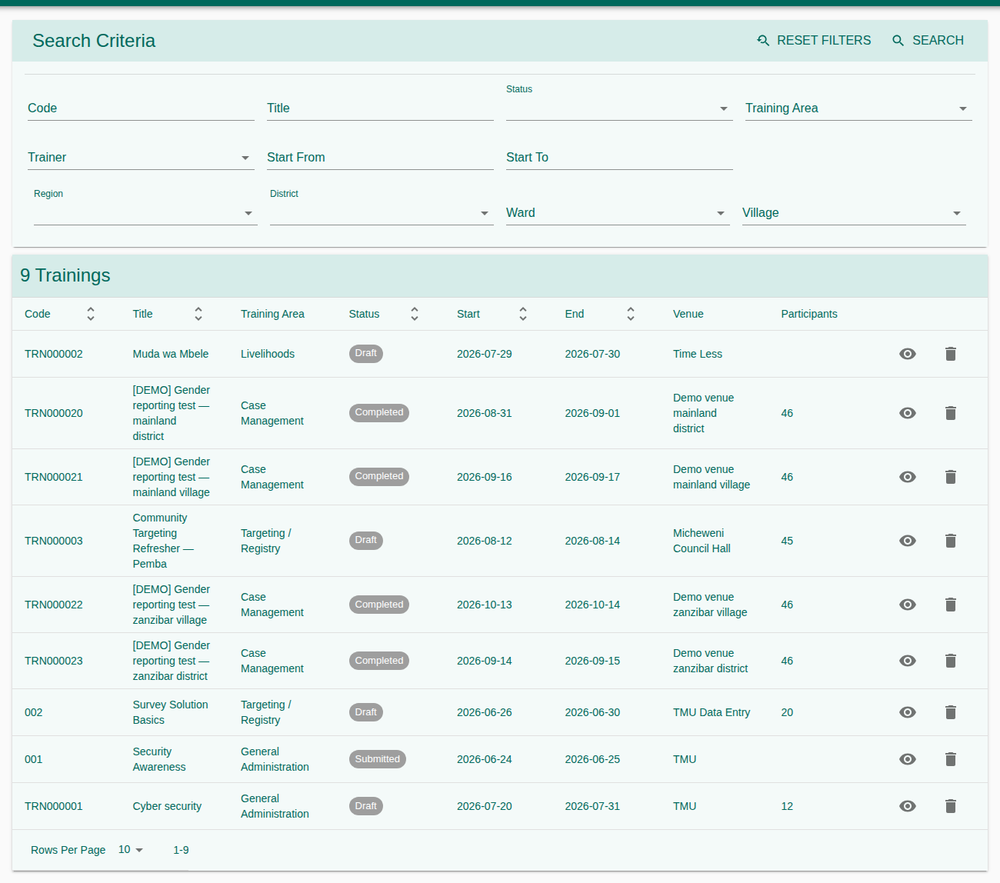
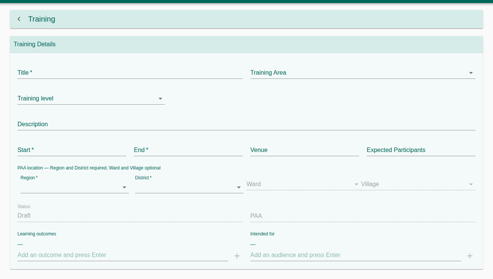
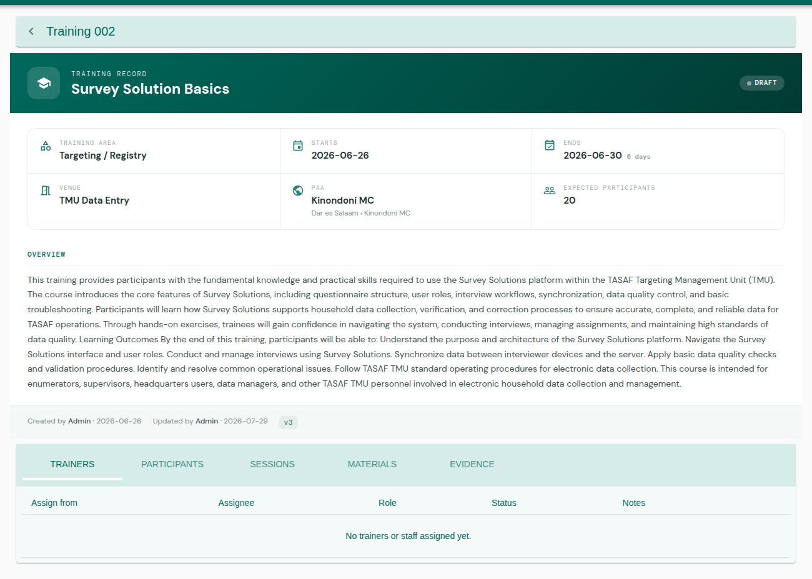
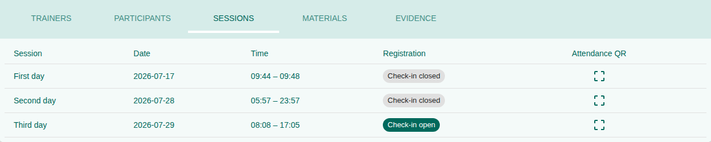
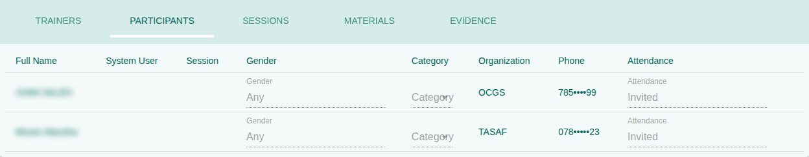
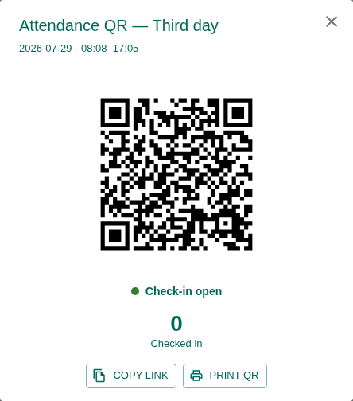
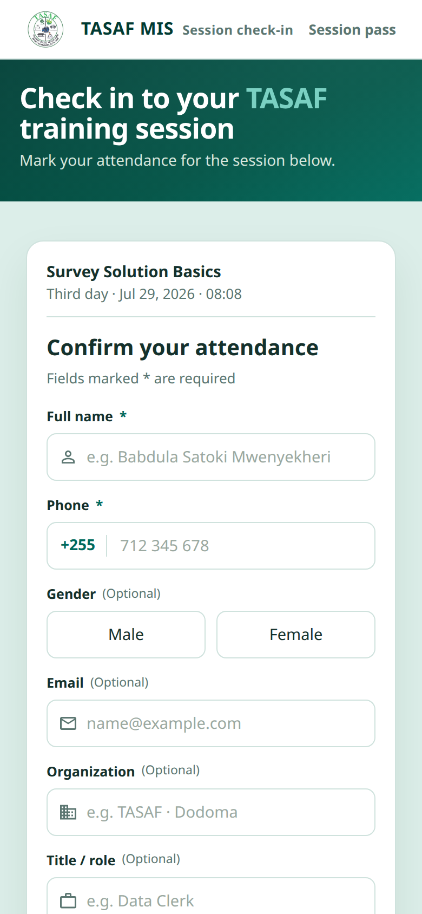
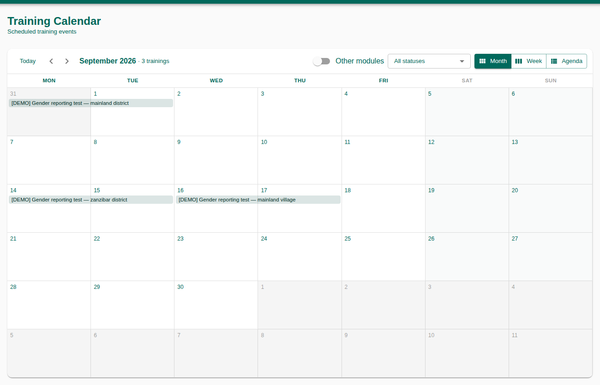
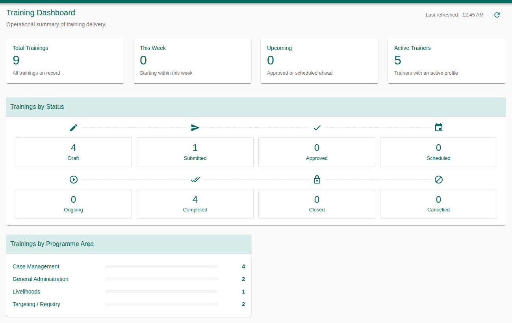

Daily procedures for planning, approving, delivering and recording TASAF trainings. A training goes from a draft to an approved and scheduled event, with its trainers, sessions, participants and attendance, then to a completed record with its materials and evidence.
1. Purpose, Roles, and Access
| Role | Typical work |
|---|---|
| Training officer | Create trainings, add trainers, sessions and participants, record attendance, upload files. |
| Training approver | Approve or reject submitted trainings. |
| Trainer / facilitator | Open check-in for a session and show its QR code. |
| Supervisor / M&E | Calendar, attendance list and dashboard. |
Access & permissions
| Right | Grants |
|---|---|
210101 | Search and open trainings (and the Trainings menu). |
210102 / 210103 / 210104 | Create / update / delete a training. |
210110 | Approve or reject a training. |
210301 / 210302 | See / manage trainer profiles. |
210402 | Assign trainers and staff to a training. |
210701 / 210702 | See / manage participants and attendance. |
210901–210904 | See / add / update / delete sessions. |
210501 / 210502 / 210802 | See materials / upload materials / upload evidence. |
210601 | The Training Dashboard. |
2. Menus and Pages
| Menu | Used for |
|---|---|
| Trainings | Search, open or create a training. |
| Calendar | Month, week or agenda view of trainings and other activities. |
| Trainers | Reusable trainer profiles. |
| Attendance | Every participant of every training, with filters. |
| Training Dashboard | Summary counts. |
On the Trainings list, filter by code, title, status, training area, trainer, start date and location. A single click shows a quick preview; a double click opens the training.


3. Create a Training
You do not need a trainer first. Only Code, Title, Start and End are required.
- Open Trainings and press + (or New training on the calendar).
- Fill the details: code (unique), title, Training Area (what kind of training, e.g. Targeting, Payment), description, start and end dates, venue, expected participants.
- Choose the PAA location: Region and District are required, Ward and Village optional. The PAA is worked out from the district.
- Watch the conflict banner. Conflicts that block saving (red) mean a trainer, venue or staff member is already booked in that window. Warnings allow saving.
- Press Save. The training is a Draft, and its tabs appear: Trainers, Participants, Sessions, Materials, Evidence.


4. Status Workflow
The status changes only through the buttons at the top of the training.
| Status | Buttons | Who |
|---|---|---|
| Draft | Submit · Cancel | Officer |
| Submitted | Approve · Reject | Approver (210110) |
| Rejected | Revise (back to Draft) | Officer |
| Approved | Schedule · Cancel | Officer |
| Scheduled | Start · Reschedule · Cancel | Officer |
| Ongoing | Complete · Cancel | Officer |
| Completed | Close | Officer |
| Cancelled · Closed | None (final) |
- The training's details can be edited only while it is Draft or Rejected.
- Schedule checks for conflicts again and is refused if a trainer, venue or staff clash exists.
- Reschedule asks for the new dates and a reason, moves the sessions with them, and tells you how many sessions now fall outside the new window. Every reschedule is kept in the Reschedule history.


5. Trainers
Trainer profiles
Under Trainers, create a profile once for anyone you assign repeatedly: code, full name, type, organization, position, specialization, phone, email and a short bio. A profile can be linked to a staff user and marked Active or Inactive.
Assign trainers to a training
- Open the training's Trainers tab.
- Pick a trainer profile, or a staff user.
- Choose the role (Lead Trainer, Assistant Trainer, Facilitator, Coordinator, Observer, Support Staff) and status, and save.
Active assignments are used in the conflict check, so the same trainer cannot be booked twice at once.
6. Sessions
A training can run over several sessions, each with a date, start and end time. On the Sessions tab, use Add session. Deleting a session keeps the people registered for it on the training's register. Each session has Registration (on or off) and an Attendance QR (section 8).


7. Participants and Attendance
- Open the Participants tab and choose Add participant.
- Enter the full name, category, organization and phone, or pick a system user.
- Add the person to one session or to the Whole training.
- Set the attendance: Invited → Confirmed → Attended, Absent or Replaced.
People who check in with the QR code are added here automatically as Attended.


8. QR Check-in
Attendees can register their own attendance from their phones, with no login.
- On the Sessions tab press Attendance QR.
- Check-in opens by itself while the session is running. Press Open check-in to open it earlier or on another day, and Close check-in to stop it.
- Show the code on screen, Print QR, or Copy link to share it. The dialog counts how many have checked in.
- Attendees scan the code, check the session details and enter their full name, gender, phone and, optionally, email, organization and title. They can show the confirmation screen at the door.




9. Materials and Evidence
- Materials: files used before or during the training, such as the agenda or slides.
- Evidence: proof after the training, each with a type: Training Report, Attendance Sheet, Photo, Signed Form, Evaluation Summary, Trainer Report or Other.
Each file is listed with who uploaded it and when.
10. Calendar, Attendance List and Dashboard
Calendar
Switch between Month, Week and Agenda, and filter by status. Trainings are shown with Coordination and Communications activities, coloured by source, so clashes across modules are visible. Click an event to open it.


Attendance
Every participant of every training, filtered by name, attendance, category and location. View Training opens the training of a row. Attendance itself is recorded on each training's Participants tab.
Training Dashboard
Total trainings, this week, upcoming, ongoing, completed, cancelled and active trainers, with charts by status and by programme area.


11. Troubleshooting and Good Practice
| Problem | What to do |
|---|---|
| Save is disabled | Read the red conflict banner; change the dates, venue or trainer. |
| I can't edit the details | Only Draft or Rejected trainings can be edited. Use Reschedule to change dates later. |
| Schedule is refused | A conflict appeared since the training was approved. Open the conflict and resolve it. |
| Attendees see “Registration for this session is closed” | Open check-in in the Attendance QR dialog. |
| A menu or button is missing | Ask the administrator to check your role, then log in again. |